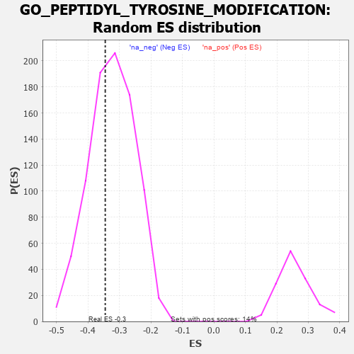

| | | Dataset | 7d |
| Phenotype | NoPhenotypeAvailable |
| Upregulated in class | na_neg |
| GeneSet | GO_PEPTIDYL_TYROSINE_MODIFICATION |
| Enrichment Score (ES) | -0.34537277 |
| Normalized Enrichment Score (NES) | -1.0693259 |
| Nominal p-value | 0.37951106 |
| FDR q-value | 0.78865397 |
| FWER p-Value | 1.0 |
Table: GSEA Results Summary
 Fig 1: Enrichment plot: GO_PEPTIDYL_TYROSINE_MODIFICATION
Fig 1: Enrichment plot: GO_PEPTIDYL_TYROSINE_MODIFICATION
Profile of the Running ES Score & Positions of GeneSet Members on the Rank Ordered List
| PROBE | GENE SYMBOL | GENE_TITLE | RANK IN GENE LIST | RANK METRIC SCORE | RUNNING ES | CORE ENRICHMENT | | 1 | HGF | | | 276 | 0.870 | -0.0047 | No |
| 2 | WEE2 | | | 333 | 0.766 | 0.0148 | No |
| 3 | CNOT7 | | | 348 | 0.750 | 0.0391 | No |
| 4 | HES5 | | | 661 | 0.571 | 0.0194 | No |
| 5 | BAZ1B | | | 861 | 0.516 | 0.0121 | No |
| 6 | SRC | | | 1128 | 0.459 | -0.0056 | No |
| 7 | NCK2 | | | 1131 | 0.458 | 0.0100 | No |
| 8 | ROR1 | | | 1993 | 0.306 | -0.0883 | No |
| 9 | VPS25 | | | 2033 | 0.300 | -0.0828 | No |
| 10 | DDR1 | | | 2176 | 0.280 | -0.0911 | No |
| 11 | SYK | | | 2186 | 0.278 | -0.0826 | No |
| 12 | CLK4 | | | 2329 | 0.256 | -0.0917 | No |
| 13 | MIF | | | 2357 | 0.252 | -0.0863 | No |
| 14 | HIPK2 | | | 2389 | 0.247 | -0.0817 | No |
| 15 | MET | | | 2430 | 0.240 | -0.0784 | No |
| 16 | MELK | | | 2499 | 0.227 | -0.0792 | No |
| 17 | ZGPAT | | | 2694 | 0.200 | -0.0968 | No |
| 18 | FER | | | 2803 | 0.183 | -0.1041 | No |
| 19 | FGFR2 | | | 2895 | 0.167 | -0.1098 | No |
| 20 | ACVR1 | | | 2932 | 0.161 | -0.1088 | No |
| 21 | SOCS4 | | | 2953 | 0.157 | -0.1059 | No |
| 22 | BTK | | | 2958 | 0.156 | -0.1009 | No |
| 23 | SCYL1 | | | 3172 | 0.126 | -0.1235 | No |
| 24 | TWF1 | | | 3199 | 0.123 | -0.1226 | No |
| 25 | TESK2 | | | 3401 | 0.089 | -0.1449 | No |
| 26 | FES | | | 3501 | 0.077 | -0.1548 | No |
| 27 | MAPK3 | | | 3589 | 0.062 | -0.1636 | No |
| 28 | DOK7 | | | 3603 | 0.059 | -0.1632 | No |
| 29 | CBL | | | 3621 | 0.056 | -0.1634 | No |
| 30 | HSF1 | | | 3718 | 0.039 | -0.1742 | No |
| 31 | DGKQ | | | 3856 | 0.020 | -0.1909 | No |
| 32 | TPST1 | | | 3884 | 0.013 | -0.1938 | No |
| 33 | IGF1R | | | 3970 | -0.002 | -0.2046 | No |
| 34 | CHMP6 | | | 3977 | -0.003 | -0.2052 | No |
| 35 | TAL1 | | | 4064 | -0.018 | -0.2154 | No |
| 36 | SFRP2 | | | 4065 | -0.018 | -0.2148 | No |
| 37 | MTOR | | | 4114 | -0.025 | -0.2200 | No |
| 38 | ABL1 | | | 4125 | -0.027 | -0.2204 | No |
| 39 | ERCC6 | | | 4464 | -0.087 | -0.2601 | No |
| 40 | NTRK2 | | | 4543 | -0.104 | -0.2664 | No |
| 41 | ABI2 | | | 4554 | -0.106 | -0.2640 | No |
| 42 | CLK2 | | | 4628 | -0.124 | -0.2689 | No |
| 43 | FGFR3 | | | 4656 | -0.129 | -0.2679 | No |
| 44 | FBXW7 | | | 4816 | -0.161 | -0.2824 | No |
| 45 | RAP2C | | | 5073 | -0.218 | -0.3072 | No |
| 46 | EPHA4 | | | 5273 | -0.265 | -0.3232 | No |
| 47 | EPHA1 | | | 5349 | -0.285 | -0.3228 | No |
| 48 | DLG4 | | | 5388 | -0.293 | -0.3175 | No |
| 49 | CBLB | | | 5445 | -0.306 | -0.3139 | No |
| 50 | FRK | | | 5451 | -0.307 | -0.3039 | No |
| 51 | FGFR1 | | | 5543 | -0.332 | -0.3039 | No |
| 52 | ROR2 | | | 5626 | -0.353 | -0.3020 | No |
| 53 | PDCL3 | | | 5738 | -0.388 | -0.3026 | No |
| 54 | TTBK1 | | | 5969 | -0.460 | -0.3158 | No |
| 55 | INSR | | | 6204 | -0.538 | -0.3267 | Yes |
| 56 | MVP | | | 6223 | -0.543 | -0.3101 | Yes |
| 57 | EHD4 | | | 6227 | -0.545 | -0.2915 | Yes |
| 58 | NEK1 | | | 6402 | -0.618 | -0.2921 | Yes |
| 59 | CSK | | | 6428 | -0.630 | -0.2734 | Yes |
| 60 | ACE | | | 6526 | -0.674 | -0.2623 | Yes |
| 61 | DYRK2 | | | 6533 | -0.677 | -0.2395 | Yes |
| 62 | DDR2 | | | 6542 | -0.681 | -0.2169 | Yes |
| 63 | EGFR | | | 6708 | -0.765 | -0.2112 | Yes |
| 64 | CSPG4 | | | 6918 | -0.878 | -0.2072 | Yes |
| 65 | LRP8 | | | 6931 | -0.889 | -0.1779 | Yes |
| 66 | PIBF1 | | | 7049 | -0.966 | -0.1591 | Yes |
| 67 | GRM5 | | | 7053 | -0.969 | -0.1259 | Yes |
| 68 | CSH1 | | | 7098 | -0.995 | -0.0969 | Yes |
| 69 | RYK | | | 7102 | -1.000 | -0.0625 | Yes |
| 70 | PTPRJ | | | 7180 | -1.054 | -0.0357 | Yes |
| 71 | DYRK4 | | | 7412 | -1.283 | -0.0204 | Yes |
| 72 | FYN | | | 7881 | -2.622 | 0.0114 | Yes |
Table: GSEA details [plain text format]

Fig 2: GO_PEPTIDYL_TYROSINE_MODIFICATION: Random ES distribution
Gene set null distribution of ES for GO_PEPTIDYL_TYROSINE_MODIFICATION